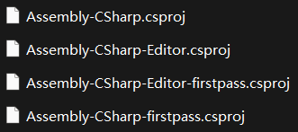

Unity程序集
如果观察Unity项目，会发现在根目录下会有这些csproj文件：

其中：
- Assembly-CSharp：项目中的一般脚本，在Assets中
- Assembly-CSharp-Editor：项目中的Editor脚本，在Assets下的Editor文件夹中
- Assembly-CSharp-firstpass：Plugins一般脚本，需在Assets下的Plugins文件夹中
- Assembly-CSharp-Editor-firstpass：PluginsEditor脚本，需在Assets下的Plugins文件夹的Editor文件夹中
也就是说firstpass其实就是
优先级顺序如下：
- Assembly-CSharp-firstpass
- Assembly-CSharp
- Assembly-CSharp-Editor-firstpass
- Assembly-CSharp-Editor
添加程序集的方法
我们正常写的所有逻辑脚本都会被放在Assembly-CSharp.dll中，为了搭建更有条理的项目，很有可能需要对其进行拆解，有2种方法：
- Unity中创建程序集
- 外部程序集
Unity中创建程序集
Unity提供了一种创建程序集的方式：
Project右键->Scripting->Assembly Definition
这样就能创建出一个asmdef文件
外部程序集
外部程序集即
这样是最原生态(Unity无关)的
放置位置有以下几种：
- Assets
- Assets/Editor
- Assets/Plugins
- Assets/Plugins/Editor
显然这就是前面提到的几个位置，它们会像cs文件一样被打到相应dll中